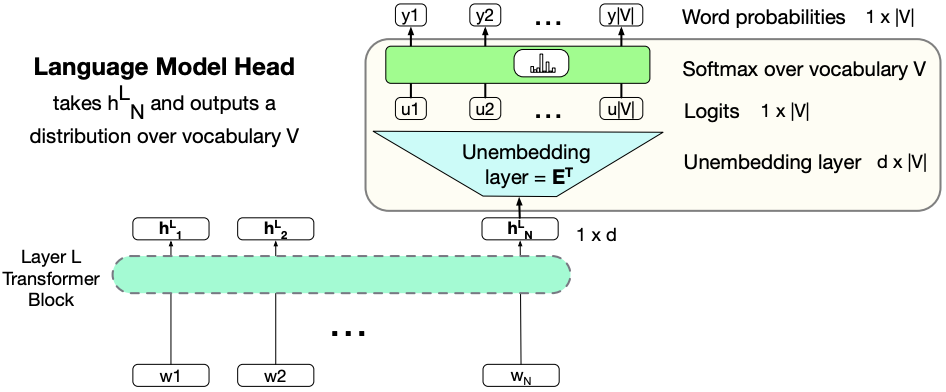
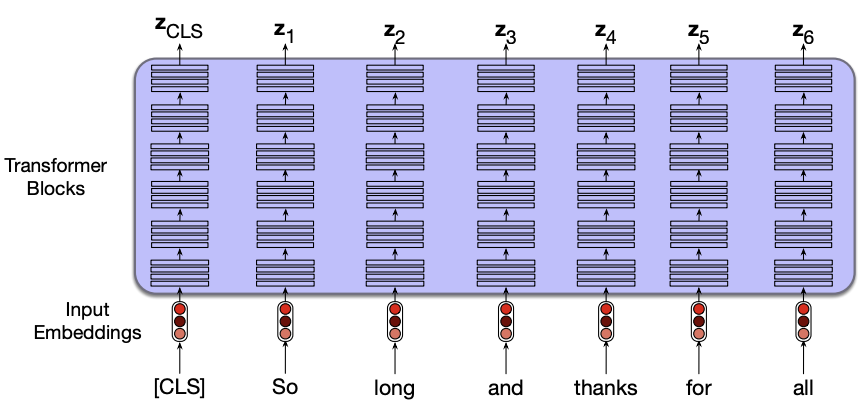

Lecture 7: More transformers#
UBC Master of Data Science program, 2024-25
Imports, LO#
Imports#
import sys
from collections import defaultdict
import matplotlib.pyplot as plt
import numpy as np
import pandas as pd
import torch
import torch.nn as nn
import torch.optim as optim
pd.set_option("display.max_colwidth", 0)
---------------------------------------------------------------------------
ImportError Traceback (most recent call last)
Cell In[1], line 7
5 import numpy as np
6 import pandas as pd
----> 7 import torch
8 import torch.nn as nn
9 import torch.optim as optim
File ~/miniforge3/envs/jbook/lib/python3.12/site-packages/torch/__init__.py:367
365 if USE_GLOBAL_DEPS:
366 _load_global_deps()
--> 367 from torch._C import * # noqa: F403
370 class SymInt:
371 """
372 Like an int (including magic methods), but redirects all operations on the
373 wrapped node. This is used in particular to symbolically record operations
374 in the symbolic shape workflow.
375 """
ImportError: dlopen(/Users/kvarada/miniforge3/envs/jbook/lib/python3.12/site-packages/torch/_C.cpython-312-darwin.so, 0x0002): Library not loaded: @rpath/libgfortran.5.dylib
Referenced from: <0B9C315B-A1DD-3527-88DB-4B90531D343F> /Users/kvarada/miniforge3/envs/jbook/lib/libopenblas.0.dylib
Reason: tried: '/Users/kvarada/miniforge3/envs/jbook/lib/libgfortran.5.dylib' (duplicate LC_RPATH '@loader_path'), '/Users/kvarada/miniforge3/envs/jbook/lib/libgfortran.5.dylib' (duplicate LC_RPATH '@loader_path'), '/Users/kvarada/miniforge3/envs/jbook/lib/libgfortran.5.dylib' (duplicate LC_RPATH '@loader_path'), '/Users/kvarada/miniforge3/envs/jbook/lib/libgfortran.5.dylib' (duplicate LC_RPATH '@loader_path'), '/Users/kvarada/miniforge3/envs/jbook/lib/libgfortran.5.dylib' (duplicate LC_RPATH '@loader_path'), '/Users/kvarada/miniforge3/envs/jbook/lib/libgfortran.5.dylib' (duplicate LC_RPATH '@loader_path'), '/Users/kvarada/miniforge3/envs/jbook/lib/libgfortran.5.dylib' (duplicate LC_RPATH '@loader_path'), '/Users/kvarada/miniforge3/envs/jbook/lib/libgfortran.5.dylib' (duplicate LC_RPATH '@loader_path'), '/Users/kvarada/miniforge3/envs/jbook/lib/python3.12/site-packages/torch/lib/libgfortran.5.dylib' (no such file), '/Users/kvarada/miniforge3/envs/jbook/lib/python3.12/site-packages/torch/../../../libgfortran.5.dylib' (duplicate LC_RPATH '@loader_path'), '/Users/kvarada/miniforge3/envs/jbook/lib/python3.12/site-packages/torch/lib/libgfortran.5.dylib' (no such file), '/Users/kvarada/miniforge3/envs/jbook/lib/python3.12/site-packages/torch/../../../libgfortran.5.dylib' (duplicate LC_RPATH '@loader_path'), '/Users/kvarada/miniforge3/envs/jbook/bin/../lib/libgfortran.5.dylib' (duplicate LC_RPATH '@loader_path'), '/Users/kvarada/miniforge3/envs/jbook/bin/../lib/libgfortran.5.dylib' (duplicate LC_RPATH '@loader_path'), '/usr/local/lib/libgfortran.5.dylib' (no such file), '/usr/lib/libgfortran.5.dylib' (no such file, not in dyld cache)
Learning outcomes#
From this lecture you will be able to
Broadly explain how transformers are used in a language model.
Broadly explain how transformers are used for autoregressive text generation.
Broadly explain how bi-directional attention works.
Broadly explain masking and masked language models.
Explain the difference between causal language model and bi-directional language model.
Use PyTorch’s
TransformerDecoderLayerlayer.
Attributions#
This material is heavily based on Jurafsky and Martin, Chapter 10 and Chapter 11.
Recap and introduction#
❓❓ Questions for you#
Exercise 7.1: Select all of the following statements which are True (iClicker)#
(A) Unlike RNNs, self-attention allows the model to process all tokens in the sequence simultaneously without recurrent connections.
(B) Self-attention enables each input token to influence the representation of every other token in the sequence through learned attention weights.
(C) Self-attention computes a weighted sum of value representation based on the similarity between query and key representations of tokens.
(D) The computational complexity of self-attention is quadratic in the sequence length, due to pairwise attention score calculations.
(E) The output of a self-attention layer is always a scalar per token.
Exercise 7.1: V’s Solutions!
A, B, C, D
Exercise 7.2: Select all of the following statements which are True (iClicker)#
(A) Self-attention can model long-range dependencies better than RNNs because it does not rely on sequential information flow.
(B) Transformers use positional embeddings because self-attention alone does not encode the order of tokens.
(C) Multihead self-attention allows the model to attend to different types of information from different subspaces.
(D) Self-attention enables Transformers to model relationships between different parts of the input by computing weighted combinations of all tokens, where weights are based on learned similarity scores.
Exercise 7.2: V’s Solutions!
A, B, C, D
Exercise 7.3: Discuss the following questions with your neighbour#
How are the query (\(Q\)), key (\(K\)), and value (\(V\)) matrices used in self-attention?
What are the typical components of a Transformer block?
What architectural feature enables Transformers to process data in parallel?
Now you know some fundamentals of transformers. In this lesson we’ll focus on:
Three types of language models
Coding example of text generation and
TransformerDecoderLayerusing PyTorch
In the last lecture, we looked at this architecture for language modeling. This is a decoder-only language model.

Language models can be broadly categorized into three types:
Decoder-only models (e.g., GPT-3): These models focus on generating text based on prior input. They are typically used for tasks like text generation.
Encoder-only models (e.g., BERT, RoBERTa): These models are designed to analyze and understand input text, making them suitable for tasks such as sentiment analysis and question answering.
Encoder-decoder models (e.g., T5, BART): These models combine the functionalities of both encoder and decoder architectures to handle tasks that involve transforming an input into an output, such as translation or summarization.
Let’s try to understand the distinctions between these architectures. Later, we will look at a code example of the decoder-only architecture.
1. Decoder-only architecture#
Training a language model with transformers
To train a language model, we begin by segmenting a large corpus of text into fixed-length input/output sequence pairs. For example:
Input: So long and thanks for
Target (Gold output): long and thanks for all
Here, the goal is for the model to predict the next word at each position in the target sequence based on the corresponding context in the input.
At each time step, the final layer of the Transformer takes into account all preceding tokens in the input sequence and predicts a probability distribution over the entire vocabulary for the next token.
During training, we use cross-entropy loss to compare the model’s predicted distribution with the actual next word in the sequence. The objective is to maximize the likelihood of the correct next token at each position.
The total loss for a training sequence is computed as the mean of the cross-entropy losses across all positions in that sequence.
Causal Masking in decoder-only models
In decoder-only language models, we must ensure that the model does not attend to future tokens when computing self-attention. This is essential for preserving the causal structure of text generation, where each token is predicted based only on the preceding tokens.
To enforce this, we apply a causal mask during the attention computation. The mask sets the upper triangle of the attention score matrix (which corresponds to future tokens) to a very large negative value, typically \(-\infty\).
When the attention scores are passed through the softmax function, these large negative values become effectively zero. As a result, the model ignores future tokens when predicting the current one.
This mechanism maintains the left-to-right (causal) nature of the model, ensuring that predictions are based only on past context.

Autoregressive text generation
Once we have a trained model, we can generate new text autoregressively, similar to how RNN-based models work.
In autoregressive generation (also known as causal language model generation), text is generated one token at a time by repeatedly sampling the next token conditioned on all previously generated tokens.
The sampling process in neural text generation resembles that of Markov models in its sequential nature. However, Transformer-based models capture long-range dependencies and richer contextual information beyond immediate history.
Models in the GPT family are examples of autoregressive language models, primarily designed for generating coherent and contextually appropriate text.
In this demo, we will implement transformer-based text generation using PyTorch.
We’ll walk through the key components needed to build a simple autoregressive text generator and apply it to generate recipe-style text.
This example will help you understand how the underlying architecture translates into working code and how generation unfolds step by step.
Break#
2. Encoder-only architecture#
Models such as BERT and its variant RoBERTa are examples of bidirectional Transformer models with an encoder-only architecture.
These models are primarily designed for a variety of natural language understanding tasks, such as text classification, sentence similarity, and question answering.
Remember the sentence transformers you used in DSCI 563 Lab 1 to compute sentence embeddings? Those embeddings are based on BERT, fine-tuned for semantic similarity tasks.
Bidirectional self-attention
So far, we’ve looked at backward-looking self-attention, also known as a causal or left-to-right Transformer model.
In causal attention, each output is computed using only the tokens that come before the current position in the sequence.
This setup is ideal for autoregressive text generation, where predicting the next token depends solely on prior context.
However, in tasks like sequence classification or sequence labeling, causal models have a major limitation: they cannot access future tokens, which may contain important context.
The hidden state at each position is computed using only the current and preceding tokens, and it ignores useful information from the right side of the sequence.
Bidirectional self-attention overcomes the limitations of causal attention by allowing each token to attend to all tokens in the input sequence, regardless of their position.
As in causal attention, the model maps sequences of input embeddings \((x_1, \dots, x_n)\) to sequences of output embeddings \((y_1, \dots, y_n)\) of the same length.
This bidirectional flow of information makes it particularly well-suited for sequence classification, named entity recognition, and other language understanding tasks.
With bidirectional encoders, we obtain contextual representations of each token by incorporating information from both the left and right context. These representations are generally useful for a wide range of downstream NLP tasks.
The core computations in the self-attention mechanism remain the same as in causal models.
However, in bidirectional attention, we no longer mask out the future tokens. The attention score matrix includes all pairwise dot products \(q_i \cdot k_j\) without setting the upper triangle to \(-\infty\).

But this raises a challenge: How do we train a bidirectional encoder?
In causal models, training is straightforward. We simply predict the next word based on past context.
Can we apply the same strategy here?
No, because in a bidirectional model, the representation of a token already includes information from both sides.
Predicting the next token would be cheating, since the model has access to the token it’s supposed to predict.
“Fill-in-the-blank” task
To train bidirectional encoder models, we use a fill-in-the-blank task, also known as the cloze task, instead of predicting the next word.
In this setup, the model is given an input sequence with one or more tokens masked (hidden), and it must predict the missing tokens.
I am studying science at UBC because I want to ___ as a data scientist.
The ___ in the exam where the fire alarm is ___ are really stressed.
During training, one or more tokens in the input sequence are masked out, and the model learns to predict a probability distribution over the vocabulary for each masked position.
The model uses cross-entropy loss at each masked position to guide the learning process.
Masking
There are several ways to deprive the model of one or more tokens in the input sequence during training:
Masking: Replace a token with a special
[MASK]token and train the model to recover the original token.Random corruption: Replace a token with a random token from the vocabulary and train the model to recover the correct one.
This approach is known as masked language modeling, and it was used in the training of BERT.
In BERT, 15% of the input tokens in each training sequence are selected for masking:
80% of the selected tokens are replaced with
[MASK]10% are replaced with a randomly selected token
10% are left unchanged
This strategy helps the model learn to make predictions in varied and realistic contexts.
Contextual embeddings
The representations created by Transformer models are called contextual embeddings.
Earlier methods like word2vec learned a single static vector for each word \(w\) in the vocabulary, regardless of its context.
In contrast, Transformer-based models, whether causal (like GPT) or masked (like BERT), generate contextual representations, each word is represented by a different vector depending on its surrounding context.
The key difference:
Causal models (e.g., GPT) use left-side context to build the representation.
Masked language models (e.g., BERT) use both left and right context, thanks to bidirectional attention.

BERT model parameters
The original BERT model (Bidirectional Encoder Representations from Transformers) was a bidirectional transformer encoder with the following specifications:
Training data:
800 million words from a book corpus called BooksCorpus
2.5 billion words from the English Wikipedia
Total corpus size: 3.3 billion words
Hidden size: 768
(Recall from DSCI 563 Lab 1: the sentence embeddings you used were also 768-dimensional, as they came from a BERT-based model.)
Transformer architecture:
12 Transformer layers (also called encoder blocks)
Each layer includes 12 attention heads (multi-head attention)
The total model size is over 100 million parameters
3. Encoder-decoder architecture (high-level)#
There are tasks such as machine translation or text summarization, where a combination of encoder and decoder architecture is beneficial.
For instance, when translating from English to Spanish, it would be useful to get contextual representations of the English sentence and then autoregressively generate the Spanish sentence.
In the encoder-decoder transformer architecture, the encoder uses the transformer blocks we saw in the previous lecture.
The decoder uses a more powerful block with an extra cross-attention layer that can attend to all the encoder words.
Interim summary
The table below summarizes the key differences between the three main types of Transformer-based language models.
Feature |
Decoder-Only (e.g., GPT-3) |
Encoder-Only (e.g., BERT, RoBERTa) |
Encoder-Decoder (e.g., T5, BART) |
|---|---|---|---|
Contextual Embedding Direction |
Unidirectional (left-to-right) |
Bidirectional |
Bidirectional (encoder) + unidirectional (decoder) |
Output Computation Based On |
Only previous (left) context |
Full context (both left and right) |
Encoded representation of the full input |
Text Generation Capability |
Naturally suited for text generation |
Not designed for direct text generation |
Can generate text (e.g., translation, summarization) |
Example |
MDS Cohort 9 is the ___ |
MDS Cohort 9 is the best! → positive sentiment |
Input: Translate to Mandarin: MDS Cohort 9 is the best! |
Typical Use Cases |
Autoregressive generation, language modeling |
Classification, sequence labeling, embedding extraction |
Text-to-text tasks (e.g., translation, summarization, rewriting) |
Contextual Embeddings |
Unidirectional contextual embeddings and token distributions |
Bidirectional contextual embeddings |
Encoder: bidirectional |
Sequence Processing |
Given a prompt \(X_{1:i}\), predicts \(X_{i+1}\) to \(X_L\) |
Embeddings used for analysis, not generation |
Encode input sequence, then decode output step-by-step |
This is just a high-level introduction of common transformer architectures.
There are many things related to transformers which we have not covered. Refer to the linked resources from lecture 7 if you want to learn more.
In particular, go through these chapters from Jurafsky & Martin book: Chapter 10, Chapter 11, Chapter 12, Chapter 14
The Illustrated Transformer is an excellent resource.
Transformers are not only for NLP. They have been successfully applied in many other domains often with state-of-the-art results. For example,
Implementing transformer blocks with PyTorch
To implement Transformer models using PyTorch, the following classes are particularly useful:
-
Used for encoder-only architectures. Combines multi-head self-attention with a feedforward neural network, residual connections, and layer normalization.
TransformerDecoderLayer:
Used for both:Decoder-only models, where it includes masked self-attention and feedforward layers.
Encoder-decoder models, where it includes masked self-attention, cross-attention (attending to encoder outputs), and a feedforward layer.
TransformerDecoder:
Stacks multiple decoder layers to form a complete decoder module. In encoder-decoder architectures, it takes:A decoder input sequence
A
memoryinput (i.e., the encoder’s output)
MultiheadAttention:
A lower-level component that computes attention across different heads. It enables the model to attend to information from multiple representation subspaces at different positions.
Use this class if you’re building a Transformer from scratch or modifying attention behaviour manually.
Final comments and summary#
The Transformer architecture is modular and adaptable across a wide range of NLP tasks, from classification to generation.
We explored three types of language models built with Transformers:
Decoder-only (e.g., GPT): Good for text generation with unidirectional attention.
Encoder-only (e.g., BERT): Used for classification and embedding tasks with bidirectional attention.
Encoder-decoder (e.g., T5, BART): Ideal for tasks that require input-to-output transformations, like translation.
Training objectives:
Causal models use next-word prediction.
Encoder-only models like BERT use masked language modeling (MLM) or the cloze task.
Contextual embeddings:
All Transformer-based models produce contextual embeddings—the vector for a word depends on its context.
BERT uses bidirectional context, GPT uses left-side context only.
PyTorch tools for implementation:
MultiheadAttentionfor building custom attention.TransformerEncoderLayer,TransformerDecoderLayer, andTransformerDecoderfor composing full models.
Resources#
Attention-mechanisms and transformers are quite new. But there are many resources on transformers. I’m listing a few resources here.
3Blue1Brown has recently released some videos on transformers
Relevant chapters from Jurafsky & Martin book: Chapter 10, Chapter 11, Chapter 12, Chapter 14